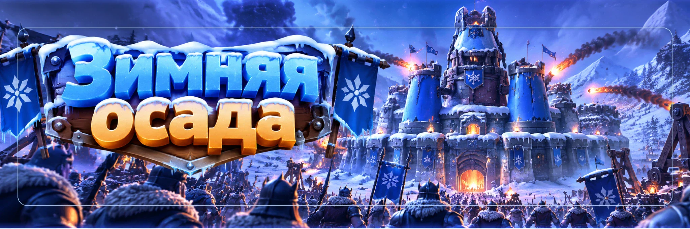

Зимняя осада
Автор - Sova
«Зимняя осада» - большое PvP-событие для альянсов, где два альянса защищают свои крепости и атакуют крепости противника.
Здесь недостаточно просто иметь самых сильных игроков.
Победу определяют:
- звёзды;
- сердца гарнизонов;
- Дух;
- Стражи;
- маршруты между крепостями;
- ограниченные попытки атак;
- координация всего альянса.
ВСЕ АТАКУЮТ ПО ОДНОМУ ПЛАНУ.
КТО МОЖЕТ УЧАСТВОВАТЬ
Для альянса:
Для игрока:
- Топка 25 уровня или выше;
- находиться в подходящем альянсе во время подбора соперника.
Если перейти в другой альянс во время события, для полноценного участия может потребоваться вернуться в исходный альянс.
КАК ПРОХОДИТ НЕДЕЛЯ
Обычная последовательность:
- Понедельник-вторник: предварительный этап и подбор соперника.
- Среда-четверг: подготовка отрядов и гарнизонов.
- Пятница: разведка противника.
- Суббота: основная битва.
- Воскресенье: результаты и награды.
Точное время всегда смотрим в текущем таймере события.
У КАЖДОГО ИГРОКА 2 ОТРЯДА
Во время подготовки создаются:
Каждый состоит из:
- героев;
- войск;
- выбранной пропорции войск.
Эти же два отряда защищают ваши крепости и затем атакуют противника.
Отдельного атакующего состава в день боя создавать не нужно.
ПОДГОТОВКА ОЧЕНЬ ВАЖНА
После завершения подготовительной фазы состав фиксируется.
Поэтому заранее проверьте:
- героев;
- снаряжение;
- Виджеты;
- пропорцию войск;
- распределение двух отрядов;
- крепость, которую они защищают.
Не оставляйте регистрацию на последние минуты.
КРЕПОСТИ
Альянс распределяет отряды по своим крепостям.
Крепости связаны маршрутами.
Нельзя просто выбрать любую дальнюю цель противника.
Чтобы открыть следующую крепость, сначала нужно полностью уничтожить гарнизоны на связанном участке маршрута.
КОЛИЧЕСТВО КРЕПОСТЕЙ МОЖЕТ МЕНЯТЬСЯ
«Зимняя осада» - новое событие, и разработчики уже меняли его механику.
Поэтому для 58 государства не запоминаем старую схему из чужого видео.
Перед подготовкой откройте текущую карту и посмотрите:
- сколько крепостей сейчас;
- сколько звёзд даёт каждая;
- какие между ними связи;
- сколько гарнизонов помещается.
ЗВЁЗДЫ - ЭТО СЧЁТ
Главный показатель матча:
Каждый защищающий отряд добавляет звёзды своей крепости.
Пока отряд жив, его звёзды остаются у альянса.
Когда отряд теряет последнее сердце:
- он удаляется из защиты;
- его звёзды исчезают.
Поэтому важно не просто выигрывать отдельные бои.
СЕРДЦА
Сердца показывают, сколько поражений ещё может выдержать гарнизон.
В текущей механике:
4 СЕРДЦА
5 СЕРДЕЦ
Каждая проигранная защита:
При 0 сердец отряд окончательно выбивается из гарнизона.
СТРАЖ
В каждой крепости R4/R5 могут назначить специального защитника: Стража.
Страж:
- имеет дополнительное сердце;
- приносит больше звёзд;
- является более важной частью защиты.
Поэтому Стражом лучше назначать действительно сильный и надёжный отряд.
ДУХ
Это одна из главных механик «Зимней осады».
Защитный отряд начинает бой со:
Когда защитник успешно отбивает атаки, его Дух постепенно снижается.
Чем ниже Дух, тем слабее становится гарнизон в следующих боях.
КАК СНИЖАЕТСЯ ДУХ
После успешных защит Дух гарнизона постепенно снижается.
Минимальное значение:
Ниже он уже не падает.
ПРОИГРАТЬ АТАКУ ИНОГДА ПОЛЕЗНО
Допустим, защитник намного сильнее вас.
В обычном PvP проигрывать ему почти бессмысленно.
В «Зимней осаде»:
Когда Дух снижен, более сильному участнику альянса может быть проще попытаться забрать у защитника сердце.
ПОТЕРЯ СЕРДЦА ВОССТАНАВЛИВАЕТ ДУХ
Если защитник проиграл бой и потерял сердце:
Поэтому цикл приходится повторять:
Нельзя один раз опустить противника до 60% и после этого снять все его сердца подряд на ослабленном Духе.
РОЛЬ СЛАБЫХ ИГРОКОВ
В этом событии небольшой аккаунт тоже может быть полезен.
Тактический вариант: если R4/R5 указывают конкретную сильную цель, менее сильные игроки могут атаковать её первыми, чтобы помочь снизить Дух защитника.
Не обязательно самому побеждать: такие атаки могут подготовить цель для более сильного участника альянса.
РОЛЬ СИЛЬНЫХ ИГРОКОВ
Сильные отряды лучше сохранять для:
- снятия сердец;
- уничтожения Стражей;
- открытия маршрута;
- удаления дорогих звёзд.
Поэтому сильному игроку невыгодно тратить атаку на слабую цель, которую способен победить кто-то другой.
Его попытки лучше использовать там, где после снижения Духа действительно можно забрать сердце.
ПОПЫТКИ АТАК
У каждого из двух отрядов свои попытки.
В начале боевой фазы:
на каждый отряд.
Затем восстанавливается:
За полный цикл можно получить до:
То есть до 20 атак на игрока, если использовать обе армии и не забывать возвращаться в событие.
НЕ ТЕРЯЙТЕ ВОССТАНОВЛЕННЫЕ АТАКИ
Попытки являются одним из главных ресурсов матча.
Если вы зарегистрировались, старайтесь в день боя заходить несколько раз, особенно ближе к концу.
Даже слабый игрок с оставшимися атаками может:
- снизить Дух;
- помочь снять последнее сердце;
- убрать звёзды;
- открыть следующий маршрут.
ФАЗА РАЗВЕДКИ
Перед боем есть отдельная фаза разведки.
В этот момент нельзя атаковать, но можно изучить:
- героев противников;
- составы войск;
- мощность;
- расположение звёзд;
- Стражей;
- маршруты.
R4/R5 должны использовать это время для подготовки плана.
СНАЧАЛА ВЫБИРАЕМ МАРШРУТ
Вместо этого:
- Найти наиболее выгодную первую крепость.
- Выбрать конкретного защитника.
- Снизить его Дух.
- Забрать сердце.
- Снова снизить Дух после его восстановления.
- Повторять до полного уничтожения отряда.
- Перейти к следующему защитнику.
- Полностью очистить крепость.
- Открыть следующую часть маршрута.
НЕ РАСПЫЛЯЙТЕ АТАКИ
Плохой вариант: 10 игроков атаковали 10 разных сильных защитников.
Результат:
- Дух немного снизился у многих;
- почти никто не потерял сердца;
- звёзды остались;
- попытки потрачены.
ОДНА ЦЕЛЬ ЗА РАЗ
R4/R5 или назначенный координатор сообщает, кого бьём сейчас.
- Слабые: снижают Дух.
- Средние: продолжают давление.
- Сильные: снимают сердца.
После потери сердца Дух защитника снова становится 100%.
Поэтому снова начинаем цикл снижения Духа.
Только после полного уничтожения отряда переходим к следующей цели.
ЗАЩИТА КРЕПОСТЕЙ
Во время подготовки задача R4/R5 не просто поставить всех сильных игроков в одну крепость.
Нужно:
- защитить наиболее ценные звёзды;
- поставить сильных Стражей;
- не оставить очевидно бесплатный маршрут;
- заполнить доступные места гарнизона;
- разумно распределить силу между крепостями.
ЕСЛИ ВАШ ОТРЯД НЕ ПОПАЛ В ГАРНИЗОН
Количество защитных мест ограничено.
Если зарегистрированных отрядов больше, чем доступных мест, часть составов может не попасть в основной гарнизон.
Но если боевые попытки игроку доступны:
Даже без места в защите можно приносить огромную пользу нападению.
ПОСТОЯННЫХ ПОТЕРЬ НЕТ
В отличие от обычного PvP:
Поэтому слабые игроки могут использовать атаки для снижения Духа, не боясь уничтожить свою обычную армию.
Это одна из причин, почему в «Зимней осаде» полезен практически каждый активный участник.
НЕ СМОТРИМ ТОЛЬКО НА МОЩНОСТЬ
Мощность отряда полезна для первичной оценки.
Но итог боя зависит также от:
- героев;
- навыков;
- пропорции войск;
- снаряжения;
- талисманов;
- Виджетов;
- срабатывания навыков;
- текущего Духа защитника.
НЕ ФИКСИРУЕМ ОДНУ ПРОПОРЦИЮ ДЛЯ ВСЕХ
Не существует одной схемы вроде «50 / 20 / 30 и всегда победа».
У двух ваших отрядов могут быть разные герои, разное снаряжение и разные сильные классы войск.
Поэтому состав подбираем под собственный аккаунт.
КАК ОПРЕДЕЛЯЕТСЯ ПОБЕДА
Основной показатель:
Когда вражеский гарнизон полностью уничтожен, его звёзды исчезают из результата противника.
Поэтому важна не просто победа в одном бою. Нужно добивать отряд до нуля сердец.
Если итоговое количество звёзд одинаковое, дополнительно могут использоваться другие показатели, например оставшаяся боевая мощность гарнизонов.
Поскольку событие ещё меняется, финальные условия проверяем в текущих правилах 58 государства.
СОБЫТИЕ ЕЩЁ МЕНЯЕТСЯ
«Зимняя осада» появилась только в 2026 году.
Разработчики уже меняли:
- карту;
- количество сердец;
- механику Духа;
- условия определения победителя;
- число крепостей.
Поэтому не превращаем одну версию карты в вечное правило.
ЧТО ДЕЛАТЬ УЧАСТНИКУ
- Зарегистрировать оба отряда.
- Проверить героев и экипировку до фиксации состава.
- Следовать распределению R4/R5.
- Во время разведки посмотреть противника.
- В бою читать метки и чат.
- Не выбирать случайную цель самостоятельно.
- Если вы слабее, помогать снижать Дух.
- Если вы сильнее, беречь атаки для снятия сердец и Стражей.
- Использовать восстановившиеся попытки.
- Смотреть боевые отчёты.
ЧТО ДЕЛАТЬ R4/R5
- Проверить регистрацию участников.
- Распределить два отряда каждого игрока.
- Не оставлять важные крепости пустыми.
- Назначить Стражей.
- Во время разведки определить маршрут.
- Подготовить первые цели.
- Назначить координатора боя.
- Определить, кто снижает Дух.
- Беречь попытки сильнейших игроков.
- После каждого снятого сердца помнить: Дух защитника снова 100%.
- Не переходить к следующей цели, пока текущая не уничтожена.
ПРОСТАЯ СХЕМА БОЯ
ЧАСТЫЕ ОШИБКИ
- Не зарегистрировать оба отряда.
- Поставить случайных героев перед фиксацией состава.
- Все сильные отряды отправить в одну крепость.
- Забыть назначить Стражей.
- Не использовать фазу разведки.
- Каждый игрок выбирает свою цель.
- Сильные игроки расходуют атаки на слабые гарнизоны.
- Слабые игроки считают себя бесполезными.
- Распределить снижение Духа по множеству разных противников.
- После снятия сердца забыть, что Дух восстановился до 100%.
- Потратить все стартовые атаки и больше не зайти в событие.
- Копировать старую карту без проверки текущей версии.
ГЛАВНОЕ
- Участвуют топ-20 альянсов государства.
- Требуется Топка 25+.
- Каждый игрок готовит 2 отряда.
- Звёзды определяют основной счёт.
- Обычный защитник сейчас имеет 4 сердца.
- Страж имеет 5 сердец и повышенную ценность.
- Защитник начинает со 100% Духа.
- Дух можно снизить до 60%.
- После потери сердца Дух снова становится 100%.
- До 10 атак на каждый из двух отрядов за полный боевой цикл.
- Слабые игроки снижают Дух.
- Сильные игроки снимают сердца.
- Идём по одному выбранному маршруту.
- Бьём одну цель до полного уничтожения.
- Постоянных потерь основной армии нет.
- Событие новое и продолжает меняться, поэтому карта и правила 58 государства всегда важнее старого гайда.